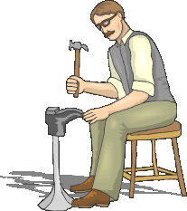

Para efeitos da nota atribuída à resolução de exercícios ao longo do semestre - Submeter até 23:59 de 8 de Novembro
(o problema continuará depois disponível para submissão, mas sem contar para a nota)
[para perceber o contexto do problema deve ler o guião da aula #04]
 Um sapateiro tem N encomendas de pares de sapatos que precisa de fabricar. Durante um determinado dia um sapateiro só pode trabalhar num único par de sapatos e depois de começar só pode passar para outro par depois de ter terminado o par que tinha começado a fazer.
Para cada par de sapatos, o sapateiro sabe exactamente o tempo em dias que demora a executar esse trabalho. Sabe também qual a multa que tem de pagar por cada dia de atraso antes do início de cada um dos pares.
Por exemplo, imagina que o sapateiro tem dois pares de sapatos encomendados: (1) demora 10 dias e tem multa de 10 euros; (2) demora 14 dias e tem multa também de 10 euros. Se optar por começar logo pelo par (1), consegue começar o (2) ao fim de 10 dias e logo paga uma multa de 100 euros (10 dias * 10 euros). Se optar antes por começar pelo par (2), então só pode começar o (1) ao fim de 14 dias e logo pagaria uma multa de 140 euros (14 dias * 10 euros).
Consegues ajudar o sapateiro a decidir quam a ordem em que deve fabricar os sapatos para minimizar a multa total a pagar?
Dado um conjunto de N encomendas de sapatos, cada um com a respectiva duração e multa por dia, a tua tarefa é determinar qual a ordem em que o sapateiro deve tratar das encomendas de modo a pagar a menor multa possível.
Na primeira linha do input vem um número N indicando o número de encomendas a processar.
Seguem-se N linhas, cada uma indicando a i-ésima encomenda. Cada uma destas linhas tem dois inteiros: Di e Mi, indicando respectivamente a duração e multa por dia do i-ésimo par de sapatos. Nota que as encomendas são "numeradas" de 1 até N: a primeira é a 1, a segunda a 2, etc.
O output deve ser constituído pela sequência de encomendas a processar de modo a minimizar a multa a pagar. Uma encomenda é representada pelo seu número no input, pelo que o output é uma permutação dos números de 1 até N. Os números da sequência devem vir separados por um espaço.
Se existirem múltiplas soluções que dêm origem à mesma multa, imprima a solução que seja menor lexicograficamente, isto é, que comece pelo número mais baixo, em caso de empate pelo 2º número mais baixo e por aí adiante.
São garantidos os seguintes limites em todos os casos de teste que irão ser colocados ao programa:
| 1 ≤ N ≤ 1 000 | Quantidade de encomendas de pares de sapatos | |
| 0 ≤ Di ≤ 1 000 | Duração de uma encomenda | |
| 0 ≤ Mi ≤ 1 000 | Multa de uma encomenda |
4 3 4 1 1000 2 2 5 5
2 1 3 4
A solução é começar pelo segundo sapato (D=1, M=1000), depois o primeiro sapato (D=3, M=4), depois o terceiro sapato (D=2, M=2) e finalmente o quarto sapato (D=5, M=5).
Desenho e Análise de Algoritmos (CC2001)
DCC/FCUP - Faculdade de Ciências da Universidade do Porto